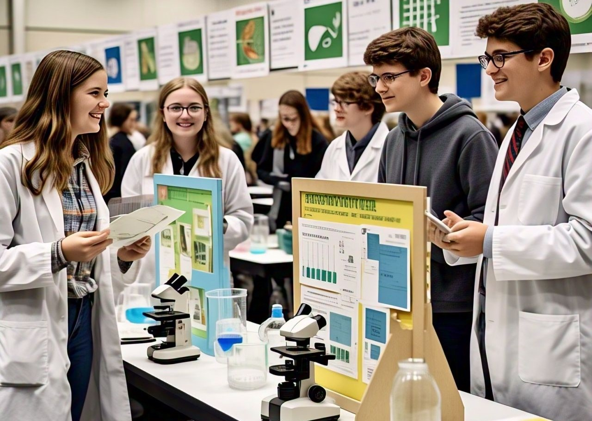
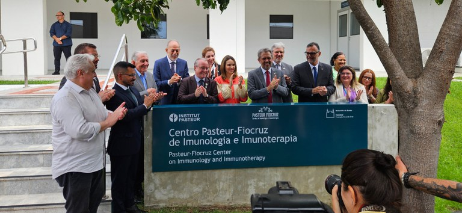
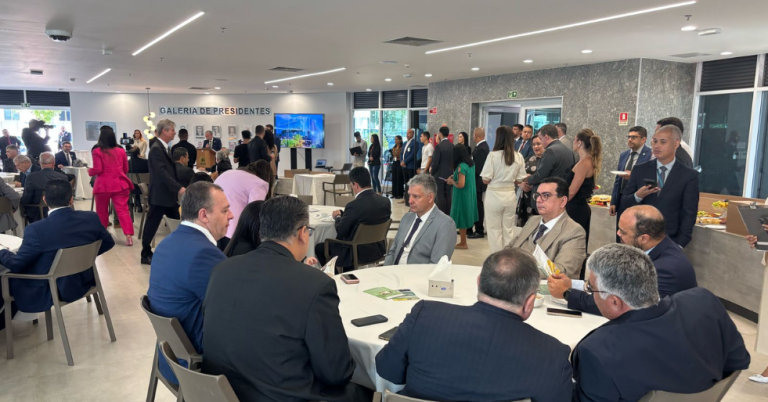
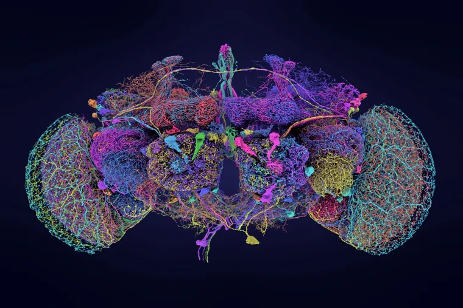

Astrônomos descobrem oceanos ocultos no sistema solar externo
Durante muito tempo, acreditou-se que os oceanos da Terra eram únicos. Até onde os cientistas sabiam, Marte era um deserto radioativo, Vênus era um árido inferno vulcânico e as inúmeras luas geladas de Júpiter, Saturno, Urano e Netuno eram bolas de gelo congeladas. Porém, na década de 1980, estranhos sinais elétricos vindos da lua Europa, de Júpiter, sugeriram fortemente que um antigo oceano de água líquida, quente e salgada estava escondido sob sua casca de gelo.
Essa revelação precipitou o lançamento da missão Europa Clipper da Nasa, uma espaçonave que deixou a Terra em outubro de 2024 com a esperança de estudar remotamente esse oceano e determinar se ele é passível de vida.
Atualmente, os cientistas não param de encontrar evidências convincentes de oceanos no Sistema Solar externo.
É certo que Enceladus, em Saturno, contém outro oceano aquoso, mas vários outros são candidatos extremamente promissores e, neste ano, tivemos vários outros. Em fevereiro, os astrônomos anunciaram que haviam encontrado evidências de um oceano escondido na lua de Saturno, Mimas. Depois, em outubro, dados convincentes apontaram para mais um oceano enterrado em Miranda, uma lua uraniana.
-- Informações de 11/10/2024 --
Alunos mostram ideias para o meio ambiente em Feira de Ciência e Tecnologia
A parceria é entre a Secretaria de Educação e a UFTM e os melhores trabalhos receberão bolsas
Cerca de 400 alunos estão finalizando os projetos para a I Mostra de Ciência e Tecnologia Ambiental, que acontecerá nos dias 29 e 30 de maio, das 13h às 16h, no Bloco N, Campus da UFTM, na Univerdecidade. Durante os dois dias, os estudantes além de apresentarem suas ideias e soluções para o meio ambiente, participarão de atividades como visita guiada à composteira dos resíduos do Restaurante Universitário e à Estação Meteorológica e exposição de maquetes e lanche.
O projeto se originou na parceria entre a Secretaria Municipal de Educação/Departamento de Projetos Especiais e a Universidade Federal do Triângulo Mineiro (UFTM), e culminará em cinco bolsas científicas para os melhores trabalhos desenvolvidos com o Grupo de Liderança da rede municipal, Agentes de Meio Ambiente (AMA).
As professoras Priscila Amorim, da Semed e Ana Paula Mila, coordenadora do Instituto de Ciências e Tecnologia da UFTM, acompanham as ações de educação ambiental voltada para as escolas. Os alunos foram orientados por universitários do curso de Engenharia Ambiental da UFTM, que desenvolveram, tecnicamente, os projetos anteriormente apresentados na 2ª Conferência Municipal Infanto-juvenil para o Meio Ambiente, que aconteceu em 2018, com o tema Água. De acordo com Priscila Amorim, os universitários visitaram as escolas, avaliando e prospectando alternativas para cada um dos projetos. As atividades propostas para essa etapa também incluem reuniões periódicas, levantamento de demandas ambientais e reconstrução do projeto.
-- Informações de 24/05/2019 --
Brasil tem novo centro de pesquisas científica para tratamento de doenças
Um novo centro de pesquisas inaugurado na última semana, em Eusébio, Região Metropolitana de Fortaleza, no Ceará, tem a proposta de tornar as imunoterapias mais acessíveis, reduzindo custos para o Sistema Único de Saúde (SUS). A imunoterapia é um tipo de tratamento contra determinadas doenças usando o próprio sistema imunológico do paciente para combater o avanço do agente infeccioso ou de tecidos danificados como, por exemplo, o câncer.
O Centro Pasteur-Fiocruz é projeto pioneiro de colaboração entre o Instituto Pasteur de Paris (França) e a Fundação Oswaldo Cruz (Fiocruz). As ações do Centro terão três áreas científicas prioritárias: câncer; doenças infecciosas e negligenciadas; e doenças autoimunes, neurodegenerativas e inflamatórias. Entre os projetos patrocinados estão o desenvolvimento de inibidores para tratamento de doenças neurodegenerativas; o desenvolvimento de conjugados anticorpo-fármacos; o desenvolvimento de fragmentos de nanocorpos/anticorpos para Doenças Tropicais Negligenciadas; Células CAR-T; e imunoterapias para melhorar as funções das células T para combater doenças infecciosas.
A unidade vai reunir pesquisadores brasileiros e estrangeiros, vinculados às duas instituições, para pesquisas e desenvolvimento de imunoterapias para doenças infecciosas e não transmissíveis. A expectativa é acelerar a pesquisa em imunologia e imunoterapia em nível regional, nacional e internacional.
O secretário de Ciência, Tecnologia e Inovação e do Complexo Econômico-Industrial da Saúde do Ministério da Saúde, Carlos Gadelha, participou da inauguração do centro e defendeu que não se pode fazer saúde pública sem ciência e inovação. “Nós estamos discutindo um modelo de desenvolvimento voltado para a vida das pessoas, do planeta. Estamos também discutindo um projeto de equidade regional”.
-- Informações de 22/05/2024 --
CFM recebe deputados e senadores em Brasília em prol da medicina e saúde da população
O Conselho Federal de Medicina (CFM) promoveu, na manhã desta quarta-feira (12), encontro com deputados e senadores na sede da Autarquia, em Brasília. O objetivo é buscar ações conjuntas para o fortalecimento da medicina e da saúde da população brasileira.
“Acreditamos que é uma excelente oportunidade de apresentarmos os projetos desenvolvidos pelo CFM e estreitarmos os laços entre os parlamentares de todo o país e a Autarquia”, declarou o presidente do CFM, José Hiran Gallo.
Os conselheiros irão tratar de projetos desenvolvidos pelo Conselho, como o levantamento sobre violência contra médicos e o Exame Nacional de Proficiência em Medicina. Os dois temas estão sendo tratados em projetos de lei que tramitam neste momento no Congresso Nacional.
-- Informações de 12/02/2025 --
O fascinante estudo de cérebro de mosca que pode ajudar a entender pensamento humano
Elas podem andar, planar e os machos podem até cantar canções românticas para atrair parceiras. Tudo isso, com um cérebro menor do que a cabeça de um alfinete.
Os cientistas estão pesquisando, pela primeira vez, o cérebro das moscas. E eles identificaram a posição, o formato e as funções de cada uma das suas 130 mil células e 50 milhões de conexões.
Esta é a análise mais detalhada já produzida do cérebro de um animal adulto.
Um importante especialista, que não participou da nova pesquisa, descreve o feito como um "enorme salto" para o conhecimento do próprio cérebro humano. E um dos líderes do estudo declarou que ele irá trazer novas percepções sobre "o mecanismo do pensamento".